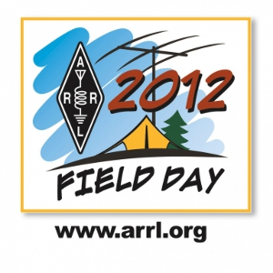

Montgomery Amateur Radio Club
Field Day 2012

Field Day Operations Plan - FD Operational Plans.pdf
|
|
Montgomery Amateur Radio Club Field Day 2012 |
|
|
Field Day is a picnic, a campout, practice for emergencies, an informal contest and, most of all, FUN! ARRL Field Day is the single most popular on-the-air event held annually in the US and Canada. On June 23 and 24, 2012, more than 35,000 American and Canadian radio amateurs will gather with their clubs, groups or simply with friends to operate from remote locations. Members and friends of the Montgomery Amateur Radio Club will set up operations at the Davis Airport, a family-owned country air strip at 7200 Hawkins Creamery Road, off Route 108, 3 miles north of Laytonsville, MD. Field Day is a time where many aspects of Amateur Radio come together to highlight our many roles. While some will treat it as a contest, our club uses the opportunity to practice our emergency response capabilities. It is an excellent opportunity to demonstrate Amateur Radio to the organizations that Amateur Radio might serve in an emergency, as well as the general public. For our club, ARRL Field Day is one of the highlights of our annual calendar. Our objective is simply to contact as many other stations as possible and to learn to operate our radio gear in abnormal situations and less than optimal conditions. We use these same skills when we help with events such as marathons and bike-a-thons; fund-raisers such as walkathons; celebrations such as parades; and exhibits at fairs, malls and museums — these are all large, preplanned, non-emergency activities. But despite the development of very complex, modern communications systems — or maybe because they ARE so complex — ham radio has been called into action again and again to provide communications in crises when it really matters. Amateur Radio Operators (also called “hams”) are well known for our communications support in real disaster and post-disaster situations. What is the ARRL? The American Radio Relay League is the 150,000+ member national association for Amateur Radio in the USA. ARRL is the primary source of information about what is going on in ham radio. It provides books, news, support and information for individuals and clubs, special events, continuing education classes and other benefits for its members. What is Amateur Radio? Often called “ham radio,” the Amateur Radio Service has been around for a century. In that time, it’s grown into a worldwide community of licensed operators using the airwaves with every conceivable means of communications technology. Hams range in age from youngsters to grandparents. Even rocket scientists and a rock star or two are in the ham ranks. Most, however, are just normal folks like you and me who enjoy learning and being able to transmit voice, data and pictures through the air to unusual places, both near and far, without depending on commercial systems. The Amateur Radio frequencies are the last remaining place in the usable radio spectrum where you as an individual can develop and experiment with wireless communications. Hams not only can make and modify their equipment, but can create whole new ways to do things.
|
|

|
-- 2012 MARC Field Day --
June 23 to 24, 2012 -- starting at 2:00 PM local -- |
 |
Davis Airport
(FAA ID: W50) 7200 Hawkins Creamery Road Gaithersburg, MD 20882 All are welcomed to attend. |
May 2nd Logistics Presentation - MARC Field Day 2012- Logistics.pdf
May 2nd System Design Presentation - MARC Field Day 2012- System Design Presentation.pdf
Field Day Hangar Layout - Hanger Layout.jpg
Field Day Site Layout - Site Layout.jpg
Message from the MARC 2012 Field Day Committee Chair Thank you all for the quick and voluminous responses to my call for help in transporting our new 10 meter antenna down from near Reading PA. Dave W2LNX and I will be going up to pick up the antenna as soon as the owner takes it down. Again, appreciate all of the offers. Looking forward to a great field day with a large body of members participating in the event. Best 73 and see you all at the next meeting, Wednesday May 2, for the first of 4 successive meetings containing presentations and activities supporting our field day preparations. Phil, K3EW
MESSAGE FROM FIELD DAY COMMITTEE CHAIR, PHIL K3EW
I wanted to update all members on upcoming MARC meeting topics concerned with Field Day 2012 planning, pass along an important message from Sid NH7C the MARC PIO concerning Field day visitation plans, and again ask for leadership assistance in planning different aspects of Field Day 2012.
UPCOMING MEETING TOPICS
See you all at all of the meetings. Come out and learn something new, operate a new mode, operate on a new band, use new operating tools.
The coordination of all of the MARC 2012 Field Day activities is essential to having a successful weekend.
The coordination of Field Day visitors, including Scouting groups, elected officials, public safety departments, ARRL officials, and other guests, is the responsibility of the MARC Public Information Officer: Sid Caesar, NH7C. Sid is engaged in our MARC Field Day messaging efforts, and will be the point of contact for the MARC Field Day messaging and visitor coordination.
Groups interested in joining the MARC Field Day will need to coordinate with Sid to assure space and staff to support their group. MARC will be focused on the Field Day operation and the public relations elements of Field Day, so any extra support, like Scouting Merit Badges or other presentations, will need to be supported by the visiting group.
Sid will coordinate with MARC members to assure MARC staffing levels to support all of the visits to the MARC Field Day site. MARC members who would like to assist with hosting our visitors should contact Sid to volunteer. Sid NH7C can be reached or call (Home).
Finally, as Chair, I still need some folks to step forward to assist in
the management of the Field Day Logistics - extremely important to successful
feeding and hydration of our setup, tear down crews,
and to our operators.
Please contact me directly
or call
to offer to lend
a hand in leading this effort which ensures that we have a successful weekend.
Thank you and best 73
Phil K3EW
I am asking all MARC members thinking about attending our Field Day 2012 to fill out the FD2012 Questionnaire as soon as they can. Thank you for your interest and support! 73 Phil Barsky, K3EW 2012 MARC Field Day Committee Chair